TADV
es una pagina diseñada por el ingeniero electrónico
ADRIAN COSTA
con el fin de realizar
adquisiciones virtuales con sistemas de primer y segundo orden. La
finalidad no termina, en un futuro cercano se incluirán otras bases
sobre tratamiento de señales y video tutoriales de muchos temas de
interes en ingeniería electrónica, mecatrónica y afines.
Sistema de adquisición virtual.
El sistema de adquisición virtual permite realizar una simulación de
sistemas de primer o segundo orden en tiempo real.
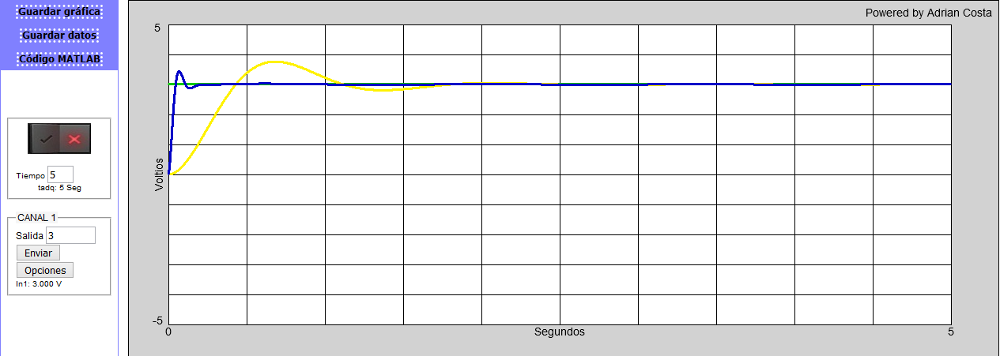
Guardar gráfica
El botón Guardar gráfica
permite guardar la gráfica obtenida de la simulación.
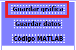
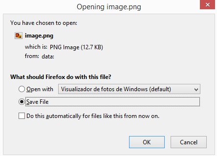
Solo la gráfica será guardada.
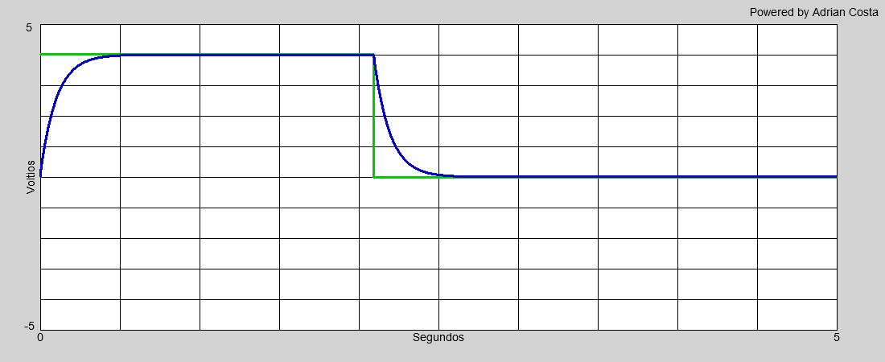
Guardar datos
El botón Guardar datos
permite guardar los datos adquiridos en un archivo con formato
CSV.
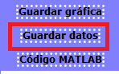
El archivo puede ser visto por medio de
EXCEL
o cualquier otro visor compatible.
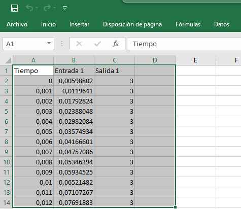
Código MATLAB
El botón Código MATLAB
permite copiar al portapapeles el código que genera la adquisición bajo la sintaxis MATLAB.
CSV.
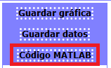
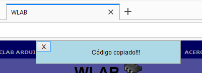
Tiempo de adquisición
El tiempo de adquisición puede ser modificado mientras no se estén adquiriendo datos.
El limite no puede superar los 100 segundos, y tampoco puede ser cero, si intenta no cumplir
estos parámetros la pagina modificará de manera automática este valor.
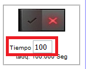
TADQ
Muestra el tiempo transcurrido durante la adquisición.
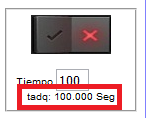
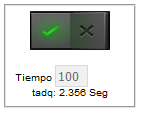
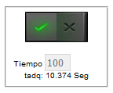
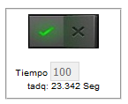
Iniciando la adquisición
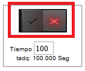
El botón de inicio cambia su imagen cuando inicia la adquisición.
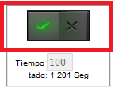
ADQUIRIENDO. DETENIDO.
La adquisición finaliza de manera automática cuando el tiempo ingresado ha transcurrido.